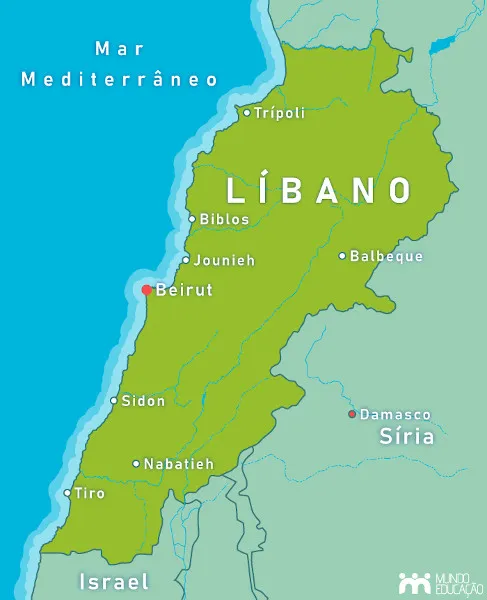

Localização Geografica
O Líbano está localizado no Oriente Médio, na costa leste do Mar Mediterrâneo. O país faz fronteira com a Síria ao norte e a leste, além de fazer fronteira com Israel ao sul. Mesmo sendo um território pequeno, o Líbano ocupa uma posição estratégica importante entre a Ásia, a Europa e a África, o que favoreceu contatos comerciais e culturais ao longo da história.

Relevo
O relevo do Líbano é marcado pela presença de montanhas que atravessam grande parte do território. A cadeia do Monte Líbano se estende próxima ao litoral, enquanto a cadeia do Anti-Líbano fica mais próxima da fronteira síria. Entre essas montanhas encontra-se o Vale do Bekaa, uma área fértil que possui grande importância agrícola. As regiões montanhosas influenciam diretamente o clima, os rios e a distribuição da população pelo território.
Relevo
O relevo libanês é dominado por duas cadeias montanhosas paralelas. Próxima ao litoral encontra-se a Cordilheira do Monte Líbano, onde estão algumas das maiores altitudes do país. Essas montanhas influenciam fortemente o clima e a ocupação humana, além de terem sido historicamente importantes para o isolamento de comunidades religiosas e culturais. Entre as montanhas do Monte Líbano e as montanhas do Anti-Líbano localiza-se o Vale do Bekaa, uma extensa planície fértil utilizada principalmente para a agricultura.
Clima
O clima do Líbano combina características mediterrâneas e montanhosas. Na costa, os verões costumam ser quentes e secos, enquanto os invernos são amenos e chuvosos. Nas regiões montanhosas, as temperaturas são mais baixas e há ocorrência de neve durante o inverno, especialmente nas áreas mais elevadas. Essa diversidade climática contribui para a variedade agrícola e para a presença de diferentes ecossistemas em um espaço relativamente pequeno.
Hidrografia
Os rios libaneses são geralmente curtos, pois nascem nas montanhas e seguem rapidamente em direção ao Mediterrâneo ou ao interior. O rio Litani é o mais importante do país, sendo essencial para irrigação, abastecimento e geração de energia. As chuvas de inverno e o degelo das montanhas ajudam a alimentar esses cursos d’água, embora o país enfrente desafios relacionados à gestão de recursos hídricos.